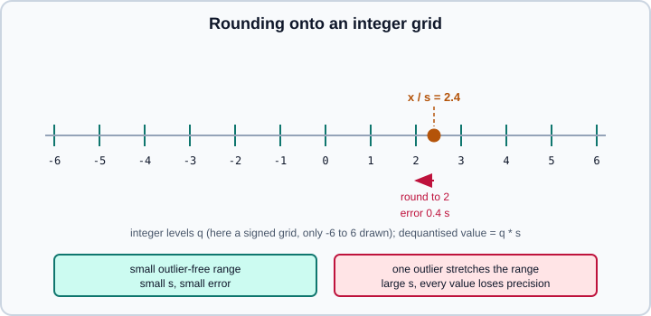

Model Compression: Quantization, Pruning & Distillation
|
This content was generated with the assistance of AI and should be verified against the official documentation before being relied on in production. |
A trained network is usually bigger and slower than a deployment needs. Compression keeps most of its accuracy while cutting memory, latency, energy or download size. Three families do the work, and they combine: quantisation stores and computes with fewer bits per number, pruning removes weights or structures, and distillation trains a smaller model to imitate a larger one.
The examples target Python 3.13 and PyTorch 2.15 with torchao 0.18.0; TensorFlow 2.21 with Keras 3.15 and ONNX Runtime are covered for the other paths. Examples were run on Python 3.13 with PyTorch 2.15 (CPU), torchao 0.18.0, ONNX Runtime 1.31 and TensorFlow 2.21 with Keras 3.15 on 2026-11-01. For the large-language-model side of quantisation (GGUF, GPTQ, AWQ, KV-cache quantisation) read Quantization for Inference; this page covers the general concepts and the classic model families. The number formats themselves are introduced in Hardware, Memory & Mixed Precision.
What compression buys and costs
-
Memory and size. INT8 weights are a quarter of FP32; INT4 an eighth. Model files and RAM shrink in proportion.
-
Speed. Smaller weights mean less memory traffic, which is the bottleneck of many inference workloads (small batch, large models). Integer or FP8 matrix units can also compute faster, but only if the kernels exist for your hardware. A model quantised on paper but run through a slow fallback kernel can be slower than FP32.
-
Accuracy. Always measure on your own validation data and task. A drop of a fraction of a point is typical for INT8; INT4 and below need more care.
Start with the cheapest option and measure at every step: lower-precision inference, then post-training quantisation, then quantisation-aware training, then distillation or pruning.
Quantisation
The affine mapping
Uniform (affine) quantisation maps a real value \(x\) to an integer \(q\) with a scale \(s\) and a zero-point \(z\):
\[ q = \mathrm{clip}\!\left(\mathrm{round}\!\left(\frac{x}{s}\right) + z,\; q_{\min},\; q_{\max}\right), \qquad \hat{x} = s\,(q - z) \]
For signed 8-bit, \(q_{\min} = -128\) and \(q_{\max} = 127\). The scale is chosen from the range \([\alpha, \beta]\) of the values to cover: \(s = (\beta - \alpha)/(q_{\max} - q_{\min})\). In symmetric quantisation \(z = 0\) and the range is \([-\max|x|, +\max|x|]\), which is simpler and faster. Asymmetric quantisation uses a non-zero \(z\), which fits skewed ranges such as post-ReLU activations. The rounding error per value is at most \(s/2\), so a narrower range gives a smaller scale and a smaller error.

Granularity
The scale can be shared at different levels:
-
Per-tensor: one scale for the whole tensor. Cheapest, but one outlier channel forces a large scale on everything.
-
Per-channel: one scale per output channel of a weight matrix. The standard for INT8 weights; it handles layers whose channels have very different magnitudes.
-
Group-wise (block-wise): one scale per group of, say, 32 or 128 consecutive values. Essential for 4-bit weights, where per-channel scales are too coarse.
The effect is easy to see in a small NumPy experiment with output channels of different scales:
import numpy as np
rng = np.random.default_rng(0)
# weight matrix whose 64 output channels have very different scales
w = rng.normal(size=(64, 256)) * rng.uniform(0.01, 1.0, size=(64, 1))
def quantize_int8(x, axis=None):
amax = np.abs(x).max(axis=axis, keepdims=True)
scale = amax / 127.0
q = np.clip(np.round(x / scale), -127, 127).astype(np.int8)
return q, scale
for name, axis in [("per-tensor", None), ("per-channel", 1)]:
q, s = quantize_int8(w, axis)
err = np.sqrt(np.mean((w - q.astype(np.float32) * s) ** 2))
print(f"{name:12s} RMSE = {err:.5f}")It prints an RMSE of about 0.0083 for per-tensor and 0.0039 for per-channel: more than twice as accurate for the same 8 bits. Source: PyTorch, Practical Quantization in PyTorch
Weights, activations and calibration
Weight-only quantisation stores weights in low precision and dequantises them on the fly (or uses a mixed-precision kernel); activations stay in 16-bit. It saves memory and bandwidth with little accuracy loss and needs no calibration data, which is why it dominates large-language-model inference. Weight-and-activation quantisation also quantises the inputs of each matrix multiplication so the multiply itself runs in integer arithmetic. Activation ranges depend on the data:
-
Dynamic quantisation computes activation scales at run time from each input. No calibration, but extra work per call.
-
Static quantisation fixes activation scales in advance by running a calibration set (typically a few hundred representative inputs) through the model and recording ranges, using min/max, percentile or entropy-based estimators. The calibration set must look like production data.
Post-training quantisation versus quantisation-aware training
Post-training quantisation (PTQ) converts a finished model. It needs at most a calibration set and takes minutes. It works well for INT8 on most networks, and for 4-bit weight-only on large models. It struggles when a few activations have huge outliers (common in transformers) or when the target is below 8 bits for small models.
Quantisation-aware training (QAT) inserts fake quantisation during training: the forward pass rounds values to the grid and back, so the loss sees the rounding error and the weights adapt to it. Rounding has zero gradient almost everywhere, so QAT uses the straight-through estimator, which passes the gradient through the rounding as if it were the identity. QAT recovers accuracy that PTQ loses, at the cost of a training run (often a short fine-tune from the trained model, not from scratch).
torchao in PyTorch
PyTorch’s own torch.ao.quantization (eager mode, FX graph mode and the older PT2E flow) is deprecated in favour of torchao (https://github.com/pytorch/ao). It is still importable in PyTorch 2.15, and its documentation once announced removal in 2.10, but new code should use torchao 0.18.0. torchao’s older function-style configuration helpers were removed in 0.15; use the *Config classes with quantize_. Old books and tutorials show the eager-mode torch.quantization.prepare and convert workflow with QConfig; treat that as legacy.
quantize_(model, config) replaces the weights of supported layers (mainly nn.Linear) in place:
import torch
from torch import nn
from torchao.quantization import (
Float8DynamicActivationFloat8WeightConfig,
Int4WeightOnlyConfig,
Int8DynamicActivationInt8WeightConfig,
Int8WeightOnlyConfig,
quantize_,
)
def make_model() -> nn.Module:
return nn.Sequential(nn.Linear(4096, 4096), nn.GELU(), nn.Linear(4096, 4096))
x = torch.randn(8, 4096, device="cuda", dtype=torch.bfloat16)
reference = make_model().to("cuda", torch.bfloat16)
# Weight-only INT8: smaller weights, activations stay bfloat16.
m8 = make_model().to("cuda", torch.bfloat16)
m8.load_state_dict(reference.state_dict())
quantize_(m8, Int8WeightOnlyConfig())
# Weight-only INT4 with group-wise scales (needs bfloat16 and a GPU with INT4 kernels).
m4 = make_model().to("cuda", torch.bfloat16)
m4.load_state_dict(reference.state_dict())
quantize_(m4, Int4WeightOnlyConfig(group_size=128))
# Dynamic INT8 for activations and weights: integer matmuls.
mdyn = make_model().to("cuda", torch.bfloat16)
mdyn.load_state_dict(reference.state_dict())
quantize_(mdyn, Int8DynamicActivationInt8WeightConfig())
# FP8 on hardware with FP8 tensor cores (Hopper and later).
# quantize_(model, Float8DynamicActivationFloat8WeightConfig())
with torch.no_grad():
ref = reference(x)
for name, m in [("int8 weight-only", m8), ("int4 g128", m4), ("int8 dynamic", mdyn)]:
err = (m(x) - ref).abs().mean().item()
print(f"{name:18s} mean abs error {err:.4f}")Source: torchao documentation
This example needs a CUDA GPU (INT4 kernels, and FP8 tensor cores for the commented-out FP8 line) and was not executed; the INT8 weight-only and dynamic INT8 configs also work on CPU, where they were checked on a smaller model.
Practical notes. The available configs and their kernel requirements change between torchao releases; the quick-start example for INT4 in the project README also passes packing-format and parameter-search options, so check the documentation of the release you install. Quantised models usually need torch.compile to reach their best speed, because compilation fuses the dequantisation into the matmul kernel. Saving a quantised model with plain state_dict() and torch.save works with weights_only=True loading only when torchao registers its tensor subclasses as safe globals; follow the torchao serialisation notes rather than pickling the whole module.
Quantisation-aware training with torchao
QAT in torchao is a two-step flow with QATConfig. prepare swaps layers for fake-quantised versions, you fine-tune normally, and convert replaces them with real quantised layers.
import torch
from torch import nn
from torchao.quantization import Int8DynamicActivationIntxWeightConfig, PerGroup, quantize_
from torchao.quantization.qat import QATConfig
model = nn.Sequential(nn.Linear(1024, 1024), nn.ReLU(), nn.Linear(1024, 10))
# ... load pretrained weights here ...
base_config = Int8DynamicActivationIntxWeightConfig(
weight_dtype=torch.int4,
weight_granularity=PerGroup(32),
)
# 1. insert fake quantisation
quantize_(model, QATConfig(base_config, step="prepare"))
# 2. fine-tune as usual (short run, small learning rate)
optimizer = torch.optim.AdamW(model.parameters(), lr=1e-5)
for _ in range(100):
x, y = torch.randn(32, 1024), torch.randint(0, 10, (32,))
loss = nn.functional.cross_entropy(model(x), y)
loss.backward()
optimizer.step()
optimizer.zero_grad()
# 3. convert to the real quantised model
quantize_(model, QATConfig(base_config, step="convert"))ONNX Runtime
If you export to ONNX (see ONNX & Model Interoperability), quantise the ONNX file with ONNX Runtime’s tools. quantize_dynamic needs no calibration data (here model.onnx is an existing exported model):
from onnxruntime.quantization import QuantType, quantize_dynamic
quantize_dynamic(
model_input="model.onnx",
model_output="model.int8.onnx",
weight_type=QuantType.QInt8,
)Static quantisation uses quantize_static with a CalibrationDataReader that yields representative inputs, and supports QDQ (quantize-dequantize node) or QOperator formats. ONNX Runtime also recommends running its pre-processing step (shape inference and optimisation) before quantising. Which operators have integer kernels depends on the execution provider, and ONNX Runtime releases lag behind the newest ONNX opset and PyTorch exports, so verify that the quantised model really runs faster on the target hardware. Source: ONNX Runtime, Quantize ONNX models
TensorFlow, Keras and LiteRT
For mobile and embedded targets, TensorFlow Lite (renamed LiteRT) converts a model with optional quantisation. With default optimisations the converter quantises weights to 8 bits; supplying a representative_dataset enables full-integer quantisation of activations as well.
import numpy as np
import tensorflow as tf
import keras
model = keras.Sequential(
[keras.layers.Input(shape=(28, 28)), keras.layers.Flatten(), keras.layers.Dense(10, activation="softmax")]
)
converter = tf.lite.TFLiteConverter.from_keras_model(model)
converter.optimizations = [tf.lite.Optimize.DEFAULT]
def representative_dataset():
for _ in range(100):
yield [np.random.rand(1, 28, 28).astype(np.float32)] # use real samples in practice
converter.representative_dataset = representative_dataset
tflite_model = converter.convert()
with open("model.tflite", "wb") as f:
f.write(tflite_model)Keras 3 also offers model.quantize(...) for post-training weight quantisation of Keras models (INT8 and related modes); consult the Keras documentation for the modes supported by your version. The older TensorFlow Model Optimization Toolkit (pruning, clustering and QAT for Keras 2) is tied to the Keras 2 generation; check its compatibility with Keras 3 before using it, and prefer the LiteRT or Keras 3 routes for new work.
Pruning and sparsity
Pruning sets weights to zero (or removes structure) on the premise that many weights contribute little.
-
Unstructured pruning zeroes individual small-magnitude weights. It reaches high sparsity (50-90%) with little accuracy loss, but the zeros are scattered, so dense hardware gains nothing unless a sparse kernel exists. It reduces size when the file is compressed.
-
Structured pruning removes whole rows, channels, attention heads or layers. The remaining model is a smaller dense model that runs faster on ordinary hardware; accuracy loss per removed parameter is larger.
-
Semi-structured (2:4) sparsity keeps exactly two non-zero values in every group of four. NVIDIA Ampere and later tensor cores accelerate this pattern, up to about 2x on the matmul. torchao provides 2:4 sparsity support; see its sparsity documentation.
Typical flow: train, prune a fraction, fine-tune to recover, repeat (iterative magnitude pruning). The lottery ticket hypothesis (Frankle and Carbin, 2019) observes that small sub-networks trained from the same initial weights can match the full network, which motivates pruning but does not by itself give a faster method.
PyTorch’s torch.nn.utils.prune implements the masks. Pruning keeps the original weights in weight_orig and a weight_mask; call prune.remove to make the pruning permanent.
import torch
from torch import nn
from torch.nn.utils import prune
model = nn.Sequential(nn.Linear(256, 128), nn.ReLU(), nn.Linear(128, 10))
# Unstructured: zero the 30% smallest-magnitude weights in the first layer.
prune.l1_unstructured(model[0], name="weight", amount=0.3)
# Structured: remove the 25% of output rows of the last layer with the smallest L2 norm.
prune.ln_structured(model[2], name="weight", amount=0.25, n=2, dim=0)
# Global: prune the 20% smallest weights across several layers together.
prune.global_unstructured(
[(model[0], "weight"), (model[2], "weight")],
pruning_method=prune.L1Unstructured,
amount=0.2,
)
for i in (0, 2):
w = model[i].weight
print(f"layer {i} sparsity: {(w == 0).float().mean().item():.2%}")
# Make the pruning permanent (drops weight_orig and the mask).
for i in (0, 2):
prune.remove(model[i], "weight")Source: PyTorch, torch.nn.utils.prune
A pruned weight is only zero: the layer is still a dense multiplication and the tensor takes the same memory. To gain speed you must convert to a sparse format, use a sparse kernel, or physically remove structures and rebuild a smaller layer.
Knowledge distillation
In distillation (Hinton, Vinyals and Dean, 2015) a large teacher produces soft targets and a small student is trained to match them in addition to the true labels. The soft probabilities carry information about class similarity ("this 7 looks a little like a 1") that hard labels hide. A temperature \(T > 1\) softens the softmax so the small probabilities become visible:
\[ p_i^{(T)} = \frac{\exp(z_i / T)}{\sum_j \exp(z_j / T)} \]
The loss mixes the usual cross-entropy with a Kullback-Leibler term between the temperature-softened distributions. The factor \(T^2\) restores the gradient scale that the temperature removes:
\[ \mathcal{L} = (1-\alpha)\,\mathrm{CE}\bigl(y,\ \mathrm{softmax}(z_s)\bigr) + \alpha\,T^2\,\mathrm{KL}\bigl(\mathrm{softmax}(z_t/T)\ \|\ \mathrm{softmax}(z_s/T)\bigr) \]
import torch
import torch.nn.functional as F
from torch import nn
def distillation_loss(student_logits, teacher_logits, labels, T=4.0, alpha=0.5):
hard = F.cross_entropy(student_logits, labels)
soft = F.kl_div(
F.log_softmax(student_logits / T, dim=-1),
F.softmax(teacher_logits / T, dim=-1),
reduction="batchmean",
) * (T * T)
return (1 - alpha) * hard + alpha * soft
teacher = nn.Sequential(nn.Linear(32, 512), nn.ReLU(), nn.Linear(512, 4)).eval()
student = nn.Sequential(nn.Linear(32, 32), nn.ReLU(), nn.Linear(32, 4))
optimizer = torch.optim.AdamW(student.parameters(), lr=1e-3)
for step in range(200):
x = torch.randn(64, 32)
y = torch.randint(0, 4, (64,))
with torch.no_grad(): # the teacher is frozen
t_logits = teacher(x)
loss = distillation_loss(student(x), t_logits, y)
loss.backward()
optimizer.step()
optimizer.zero_grad()
print("final loss:", loss.item())Variants include matching intermediate features, training on unlabelled data labelled by the teacher, and, for language models, training a small model on text generated by a large one. The student’s architecture can differ from the teacher’s, which is what makes distillation more flexible than pruning. Remember that distillation costs a full training run and that the student can only be as good as the teacher’s outputs on the data you give it. Distillation and quantisation combine: distil to a small model, then quantise it.
Choosing between the techniques
| Technique | Effort | Typical gain | Watch out for |
|---|---|---|---|
Lower-precision inference (BF16/FP16) |
Minutes |
2x memory vs FP32 |
FP16 overflow; check accuracy. |
Weight-only PTQ (INT8, INT4) |
Minutes, no data |
2-8x smaller |
Needs kernels for speed; 4-bit needs group-wise scales. |
Static INT8 PTQ |
Hours with a calibration set |
4x smaller, integer matmuls |
Activation outliers; bad calibration data. |
QAT |
A fine-tuning run |
Recovers accuracy at low bits |
Needs training code and data. |
Pruning (unstructured) |
Training cycles |
Sparse file, 2:4 kernels |
Dense hardware gives no speed-up. |
Pruning (structured) |
Training cycles |
Smaller dense model |
Larger accuracy loss per parameter. |
Distillation |
A full training run |
Any smaller architecture |
Student quality bounded by teacher and data. |
Common pitfalls
-
Judging by file size only. Measure latency on the target device; unsupported operators fall back to slow paths.
-
Calibrating on unrepresentative data, which gives wrong activation ranges and silent accuracy loss.
-
Quantising sensitive layers such as the first and last layers, embeddings, normalisation layers and attention logits. Many recipes leave them in higher precision.
-
Ignoring outliers. A single large value in a channel inflates the scale; per-channel or group-wise scales, clipping or rotation methods mitigate it.
-
Evaluating on the same data used for calibration or distillation. Keep a separate test set; see Model Evaluation & Validation for evaluation habits.
-
Using deprecated PyTorch quantisation APIs from older tutorials. Use torchao.
-
Loading quantised checkpoints with untrusted pickles. Keep
weights_only=True.